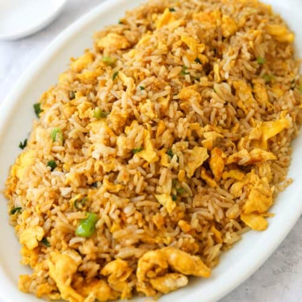

Fried Rice

Fried rice is a dish of cooked rice that has been stir-fried in a wok or a frying pan and is usually mixed with other ingredients such as eggs, vegetables, seafood, or meat. It is often eaten by itself or as an accompaniment to another dish.
Ingredients
- Cooked rice
- Eggs
- Vegetables
- Soy sauce
- Oil
Steps
- Prepare the rice: Use leftover cooked rice that has been cooled for at least a few hours. This helps avoid sticky rice during stir-frying.
- Scramble the eggs: Heat some oil in a pan, pour the beaten eggs, and scramble them until fully cooked. Set aside.
- Stir-fry the vegetables: In the same pan, add a bit more oil and sauté vegetables like peas, carrots, and green onions until they are tender-crisp.
- Combine rice and eggs: Add the cooked rice and scrambled eggs to the pan with the vegetables. Stir everything together to mix well.
- Add soy sauce and season: Pour in soy sauce and stir-fry everything together for a few minutes, adjusting seasoning to taste. Garnish with extra green onions if desired.